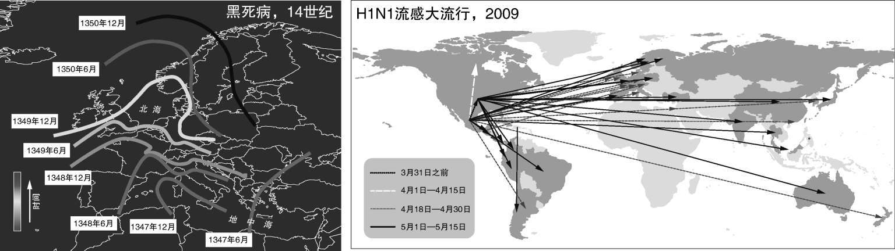

意外之背景
巴罗科罗拉多岛是巴拿马运河中央的一块热带雨林。当其附近的一条河被筑坝拦截后，该岛便只剩下几处小山顶还显露在水面上。它现已成为一个露天试验场，而试验内容是高速公路、建筑物、田地或矿井替代了原始植被，雨林被分割为若干小块之后的情形。洪水淹没巴罗科罗拉多岛周边数年之后，美洲虎和美洲豹的种群数量都迅速萎缩了。结果，它们的猎物种群数量迅速攀升：现在，一种叫刺鼠的大型啮齿类动物已遍布该岛。这些啮齿动物爱好金合欢的硕大种子，所以，它们的繁盛对金合欢的成功繁殖以及依靠这些种子维生的微生物都构成了巨大难题。随着金合欢种群数量的减少，那些种子较小的植物便取而代之，而以后者为食的动物数量随之增加。生态系统的原初变化便向岛上食物网的各个方向延伸开去。
食物网中的多米诺效应并不罕见。通常，网络一般会为大规模的突发及意外动态提供背景支撑。运输系统中的病原体、电网中的断电、社会系统中的大型冲突或意想不到的合作努力等都证明了：网络似乎是“完美风暴”的理想背景。网络节点代94表交换物质或信息（信息包、能量等）的单独实体（人、计算机、物种、基因……），或者它们也可以表示交换单独实体（货物、旅行者……）的场所（国家、机场……）。在这个非常宽泛的分类中，潜在动态的范围十分广大。为何网络会成为这些动态的天然发生场所？图的结构又会如何影响这些过程？对于这些问题不可能有总体答案，但在许多情况下我们能看到，底层网络的异质结构、非随机组织等特征会对表层发生的所有现象造成重要影响。
故障和攻击
2001年7月18日，一列火车在美国巴尔的摩的地下隧道中脱轨并起火。稍后，美国东海岸几个州的网速就变慢了。大火烧毁了途经隧道的光缆，这些光缆分属于美国最重要的几个互联网服务供应商。结果，这一事故引发了横扫美国大部分地区的多米诺效应。互联网常常面临类似的事故。任何时候总会有一定比例的路由器由于各种原因而一直处于死机状态，而每次类似事故都可能会与巴尔的摩脱轨事故一样严重。然而，这种大范围的破坏还是很少见的。网络似乎会容忍一定数量的长期功能障碍而不会出太多问题。这在一定程度上依赖于替代路径，后者允许网络内部流量绕过故障区域。然而，互联网与多数网络一样并没有太多冗余连接，其密度也并不是很高。考虑到这些特征，我们很自然就能预料到它比较容易发生故障。
尽管互联网似乎相对能够承受一些错误和意外，但精心设计的一次攻击仍能造成严重破坏。2000年2月7日，大量用户登录了雅虎网站，其规模之大令该公司的服务器无法响应这些请，网页于是随之崩溃。在随后的几天里，一系列其他网页（从趣到美国有线电视新闻网络等）也因为同样的原因而崩溃。两个月后，警察发现此类登录乃一名15岁的加拿大黑客所为，其昵称为“黑手党男孩”。他并不需要烧毁任何电缆便能阻塞互联网：其所做之事足以让这些吸引万维网上多数流量的网站崩溃。
跟互联网和万维网的情况一样，大多数真实世界的网络都显示出一种双刃的鲁棒性（robustness）。即便大部分网络遭到破坏，它们仍然能够正常运转，但某些突然的小故障或者有针对性的攻击则可能让它们彻底崩溃。例如，基因突变在整个生命过程中都会自然发生（其中有些甚至能删除细胞中的某些蛋白质），或者也能人为地产生（一项名为基因剔除的基因技术就是如此，它能关闭实验室老鼠一个完整基因的功能）。但是，生物体仍能表现出对诸多突变以及大量基因剔除的极强忍耐力。多数时候，生物体还是会在整体上继续正常工作。另一方面，某些特定的突变却能完全破坏细胞的工作。大脑一直在丢失神经元：一次给任一器官带来压力的经历，比如偶尔的酗酒，就会杀死大量细胞。但宿醉过后，一切又都恢复如初。以帕金森症为例，相当比例的神经元甚至会在病人毫无察觉的情况下消失。但当这一比例超过某一阈值，受损情况便开始变得明显。
在这方面，网络与设计而成的系统十分不同。以飞机为例，一个元件的损坏便足以让整个机器停止运转。为了让它更具复原力，我们必须采取策略，比如复制飞机的某些部件：这能让它几乎100%安全。相比之下，多数并非设计的网络则对广泛的错误表现出自然的复原力，但当特定元素失效，它们便会崩溃。网络能容纳多少错误而不出问题？而导致其崩溃的因素又是什么？为了回答这些问题，科学家通过移除网络节点以观察会发生什么情况的方式来模拟故障。删除一部分节点之后，他们会检查剩余的节点是否仍旧相互关联（即某种巨型连通分量是否仍存在于网络之中）且连接紧密（即节点之间的平均距离是否依旧很小）。为了模拟误差，节点是随机移除的。当在随机图中如此操作时，几次移除就会导致节点间距离迅速增加，图也瓦解为许多不相连部分。在半数节点移除之后，与大多数真实世界网络大小一样的随机图便遭到破坏。另一方面，异质网络（不管是真实网络图还是大小类似的无标度模型图）中经历相同的过程时，其中的巨型连接通量在80%的节点都移除之后仍然存在，而其内部的距离则实际上与最初无异。而当研究者模拟像“黑手党男孩”使用的那样一项针对性攻击时，情况则有所不同。他们一开始移除了网络中最“重要”的节点（枢纽节点）。在这种情况下，两种网络的崩溃速度都比之前快很多。然而，后者更为脆弱：在同质网络中，需要移除大约1/5的枢纽节点才能将其摧毁，而异质网络刚被移除少数枢纽节点，就会发生坍塌。
高度连接的节点似乎在错误和攻击中都发挥着至关重要的作用。它们是暴露在针对性攻击之下的多数异质网络的致命弱点。在这些网络中，枢纽节点主要负责图的整体聚合，移除其中少数枢纽节点便足以将其摧毁。另一方面，枢纽节点也是这些网络在暴露于错误和故障中时的“王牌”：当随机移除节点时，多数时候被选出的节点均为低度数节点，因此，只要枢纽节点保持不变，网络便不会坍塌。考虑到节点度数常常与中介性相关，这种情况就会愈加清晰。高度数节点多数时候都是许多网络路径经过的桥梁。当网络遭到随机破坏，为数不多的枢纽节点很少会受到影响。既然枢纽节点不受影响，它们便提供了必要的连接：许多冗余连接则显得多余；经过枢纽节点的路径会让受损网络的工作区域保持连接状态。在某些低度数节点具备高中介性且扮演桥梁角色（就像某些机场一样）的少数网络中，枢纽节点遭到攻击仍然会导致严重的破坏，但最致命的策略还是攻击最具中心性的节点。
多米诺效应
系统可能会从能够容错的弹性状态突然转向全局性崩溃，这应该引起人们的警醒。根据估计，一定速度的物种灭绝在生态系统中是不可避免的：每年，每一百万个物种中就会有一个灭绝。通常，食物网会在灭绝事件发生之后重组，绝大多数物种并不会受到此类自然灭绝事件的重大影响。但大规模的食物网崩溃也是可能的：大约2.5亿年前，超过90%的物种在相对较短的时期里纷纷灭绝，这便是著名的二叠纪大灭绝事件。过去5亿年里，地球上总共发生过5次类似的大灭绝事件。研究人员认为地外因素可能是罪魁祸首，比如充满争议的可能导致恐龙灭绝的陨石坠落事件。然而，也可以用网络来解释这些事件。物种的连环灭绝或共同灭绝事件对于生态学家而言并不陌生。例如，英国曾于20世纪中期引入黏液瘤病毒以控制兔子的种群数量，这最终导致大蓝蝶于1979年灭绝。这种病毒消灭了兔子，但兔子食用的高茎草却因此得以蔓延。后者又破坏了蚂蚁的栖息地，它们习惯在有阳光的低茎草中筑巢。蚂蚁与大蓝蝶的幼虫之间有着共生关系：它们会照看幼虫，而幼虫则报之以流食。因此，蚂蚁栖息地的破坏逐渐损害了大蓝蝶的繁衍，进而导致其灭绝。这并非真正意义上的共同灭绝，因为兔子并没有因为黏液瘤病毒而灭绝，而部分大蓝蝶也被重新引进。然而，这一事件却让我们对食物网可能受损的程度有所了解。将此事件的规模扩大，其中的连环灭绝几乎耗尽整个生态系统的物种，这便可能成为以往大灭绝事件的另一个解释。当人类主动对生态系统进行大规模破坏时也应考虑这种情况，例如，目前过多的捕捞正以前所未有的规模消耗着海洋生态系统。
网络上少数其他动态过程也可能引发类似的连锁故障 或雪崩式崩溃 。大规模停电便是一个典型例证：某个发电站的故障导致另一个发电站过载，这又导致后者出现故障，继而在网络中大范围传播电力过载故障。在此现象中，某一节点的故障不仅会导致节点互联的损失或降低节点之间的平均距离，而且还会引发多米诺效应。金融危机中出现的经济网络的系统故障 则是这种现象的又一例证。拥堵现象 中也会发生同样的情况，比如车流致使街道网络某些地点的交通发生瘫痪，人流因特殊事件而在地铁站中形成阻塞，又或者网络流量导致某些互联网服务器崩溃，等等。研究表明，枢纽节点在所有这些情况中都至关重要，不仅因为它们能减少运输时间，还因为它们会率先饱和。
流行病
1347年，一场人类史上最具破坏性的瘟疫在君士坦丁堡暴发。之后的三年里，黑死病蔓延至欧洲，导致该地区大部分人口死亡。这种疾病像波浪一样以每年200-400英里的速度在欧洲蔓延开去（图12左）。这种传染图景与现代流行病大异其趣。据估计导致世界3%人口死亡的1918年大流感仅用了一年时间传播，它甚至蔓延到了与世隔绝的太平洋岛屿上。1957年的“亚洲流感”病毒仅用了半年时间便席卷全球。而更近的2009年的猪流感则在几星期之内便从地球一侧蔓延到了另一侧（图12右）。黑死病潜伏在船只和车厢中经由朝圣者、商人和水手等媒介传播的速度每天不过数英里，而现代疾病则依赖更高效的交通方式传播，比如高速公路、火车和飞机等。14世纪时，物理距离是流行病传播的主导因素。而在现代的网络世界中，传染病能跳上飞机，数小时之内便可到达地球的另一端。
流行病经由全球网络（比如机场网络）和地方网络传播：人际传染病则依靠个人社交网络传播。例如，流感在一定程度上通过个人之间的面对面接触传播，艾滋病病毒则经由无保护性接触网络传播。2001年，卡比兰公司的物理学家罗慕阿尔多·帕斯托尔·萨托拉斯及其意大利同事亚历山德罗·韦斯皮尼亚尼决定通过建模和模拟疾病在社交网络中的传播来研究这个问题。他们只引入了疾病传染过程的最简机制：一开始，社交网络中的少数个体感染了疾病；如果某健康个体通过某种关联与这些人中之一有过接触，则他或她有一定的概率会被感染；另一方面，被感染个体也有一定的概率会康复。这种感染模型被称为“SIS”因为每个人都会经历“易感”，–感染–易感（susceptible-infected-susceptible）这个周期（健康个体对疾病“易感”）。这个过程表现了类似普通感冒的传染病，感染人群往往会在这个过程中恢复。还可以将这个过程复杂化以表现其他传染病，例如引入致死或免疫等可能性。然而，这些修改无法改变最终结果的大致走向。

14世纪的瘟疫像波浪一样在欧洲蔓延（左），而2009年的猪流感则更像火团从地球的一端至另一端溅下火花（右）其中的差异在于人类交通网络的巨大变化
萨托拉斯和韦斯皮尼亚尼发现，病毒在最初的扩张之后要么被根除——迅速减少并最终从人群中消失——要么成为地方病——停留在某地并反复感染该地区的部分人群。若每个被感染个体所感染的人数少于一人，则该种疾病低于传播阈值 ：在这种情况下，该疾病会逐渐消失。若每个被感染个体所传染的人数超过一人，则该疾病便已超过传播阈值：在这种情况下，该疾病会逐渐传播开去。若疫苗可用，人们便可通过使足够比例的人口免疫而将相关疾病控制在传播阈值之下。高传染性疾病常常最为棘手，因为它们的传播阈值很低，进而十分容易传染开去。如果人们难以根除某种疾病，则将其传染性降至传播阈值附近仍有积极效果：这会降低受地方性疾病反复感染的人口比例。
在萨托拉斯和韦斯皮尼亚尼的研究中，他们发现传播阈值主要取决于底层网络的特征。当SIS机制作用于随机网络时，出现了一种能够使我们估测根除相关疾病所需免疫人数的明确阈值。但当这种机制作用于异质网络时，免疫阈值则几乎消失：它远低于随机图的阈值；此外，系统规模越大，免疫阈值越低。若网络足够大，免疫阈值会低至几乎无法避免部分人群被感染的程度。不将几乎全部人群进行免疫是无法将疾病控制在如此之低的阈值下的。流行病与其他许多动力机制一样，都会受网络异质性的影响。人们对故障和攻击的研究已经表明，枢纽节点会将网络的不同部分连接。这意味着它们也扮演着传播疾病之桥梁的角色。枢纽节点的众多联系将它们与被感个体和健康个体相互联系：因此，枢纽节点很容易被感染，它们也容易感染其他节点。流行病学家确认的超级传播者 很可能就是社交网络的枢纽节点。
异质网络在流行病面前十分脆弱不是个好消息，但加深对它的理解却会为疾病控制提供好的思路。理想情况下，几乎所有群体都应被免疫以完全阻断传染。然而，如果我们只能免疫一小部分人群，随机选择免疫人群便不是个好主意。多数时候，随机选择意味着会选出那些与他人联系相对较少的个体。即便这样能让他们阻断疾病在其周围的传播，但枢纽人物还是会让疾病重新传播开去。瞄准枢纽人物是更好的策略。对枢纽人物进行免疫就像将其从网络中删除，而对针对性攻击的研究表明，删除小部分枢纽节点会打碎网络：因此，疾病将被限于网络中少数孤立区域。这个策略面临着一个实际问题：无人真正知晓某个人群的完整社交联络图，所以很难确定枢纽人物。然而，物理学家鲁文·科恩、什洛莫·哈夫林以及丹尼尔·本–亚伯拉罕在2003年提出了一个精巧的策略以找到枢纽人物：他们建议对人群随机抽样，并询问与这些被选取人相互联系的人的名字。这个名单中重复最多的名字最可能是社交网络的枢纽：事实上，枢纽人物因自身的众多连接而与很多人相关联，所以许多受访者都会提到他们。我们应当注意，免疫枢纽人物在理论上十分奏效，但真实世界的诸多细节会降低其有效性，比如，网络是否会处理枢纽节点周围的特殊冗余路径，或者联系网是稳定不变还是在不断演化等：例如，若爱丽丝携带艾滋病病毒且与鲍勃有过无保护性行为，而鲍勃又与卡罗尔有过无保护性行为，这两次性行为发生的先后顺序对卡罗尔而言则意义重大。
流行病在社交网络中的传播图景可部分推广至其中节点不表示人群而代表地点（比如机场）的网络中，并且在这个网络上传播的是人群（比如被感染或健康的旅行者）。在这种情况下，我们可以定义一个全球入侵阈值 ，高于此阈值的疾病成为流行病，反之则为局部层面的疾病。关闭机场往往并非上策：我们需要关闭90%的机场才能有效阻止某些流行病的传播，这将带来巨大的社会和经济损失。与发展中国家（这些国家通常是新型流行病的源头）共享抗病毒药物这种更聪明的策略则有效得多。
病毒、广告与时尚
两个无名的巴基斯坦程序员，一位大学教授，一群高中生……这些人便是计算机病毒的始作俑者。上世纪80年代，这些寄生病毒程序开始在计算机之间传播，它们基本上藏身于用户互换的软盘上。第一批病毒是自我复制软件的学术实验品，但它们很快从实验室中逃逸。1986年，“大脑”病毒出现在巴基斯坦。同年，一家德国实验室失去了对“波光”病毒的控制。一年后，一群学生传播了“维也纳”病毒。90年代，计算机病毒已成为全球性问题，但这与即将发生的事情相比则微不足道。
互联网的出现也带来了新一代病毒，它们能通过网络将自己拷贝发送至其他计算机。1999年，“梅丽莎”病毒在互联网蔓延：人们开始收到主题为“有你的重要消息”或“这是你请求的文件……请勿转给他人；”-）的邮件信息。这些邮件中包含一个名为“list.doc”的文件。如果接收者将其打开，它就会启动一个程序，进而将相同的信息发送至计算机中保存的前50位联系人。“爱虫”“蓝宝石”“巨无霸”“冲击波”以及其他许多计算机病毒纷纷在网络上爆发，它们有着类似的机制并都造成了灾难性后果：其中一些破坏了公司的计算机系统、大学的数据库，甚至影响了互联网流量。
计算机病毒传播中的一些特征与真实世界的流行病惊人地相似。计算机经由自己的连接（例如，作为计算机主人社交联系人样本的电邮网络）而受到感染，同时也以类似的方式感染其他计算机。一些关于疾病的结论解释了计算机病毒令人困惑的行为。即便杀毒程序会及时更新，一些病毒仍会在其首次攻击后的数年里继续传播。若考虑到流行病在无标度网络中的流行特征，这便不足为奇了：即使大部分计算机因杀毒程序而免疫，也不足以根除病毒感染：总会在这里或那里存在一些高度数节点让病毒重新流行。
若想在异质网络中传播信息，对计算机病毒构成严重问题的异质网络容错特性则可转变为某种资源。这便是病毒式营销 背后的原理。多亏了虚拟社交网络，万维网如今充满了“像病毒般扩散”的视频、游戏和应用程序：每天都会有成千上万人将这些内容转发给自己的所有联系人。体现这个想法的首个例子是微软电邮服务的传播。1996年，微软公司在邮件中插入写有“来微软电邮获取你的免费网页邮箱”的自动页脚，其中包含的链接能让人在很短的时间里设置一个新邮件地址（见本书第50页）。类似的策略也体现在雅虎、谷歌的邮箱服务以及许多基于邀请才能使用的社交网络服务中。
病毒式营销利用了一种被称为社交传播 的潜在心理现象。这是人们模仿其联系人传播闲话、时尚、谣言和观念的大体趋势。这种心理机制也会在创新、团队解决问题和集体决策中起作用。社会学家和心理学家们发现了人类带有明显彼此“模仿”倾向的很多例子。一一1962年，坦桑尼亚所教会学校中的群女孩就经历了一场无法控制笑声的非正常倾向。数月之后，同一所学校里的几十名学生也都表现出相同的症状，而这些学生中的一部分被送往一些村庄安置后，村中其他人也表现出同样令人不安的咯咯笑的症状。经过大量调查，研究该病例的医生A.M.兰金和P.J.菲利普得出结论：这是“集体歇斯底里”的一个病例。1998年田纳西州的一所高中发现了一个类似案例，当时，感觉闻到汽油的老师将这种感受传递给了数百名学生。排除所有外部环境因素后，科学家们得出结论说，某种“情绪传染”机制在其中起了作用。
人们已记录了许多类似的社交传播案例，但近年来科学家们发现，同样的机制还可能在不那么特殊的环境中起作用：例如，肥胖和吸烟似乎也会在社交网络中传播。相互关联的人群共有某种特征或行为主要基于三个原因。首先在于他们属于同一社会阶层这种外部因素：例如，同属较低社会阶层的人吸烟和肥胖的风险较高；同时，与社会阶层较高的人相比，他们更有可能与彼此建立联系。其次，人以群分：吸烟者或那些有着相似体重的人们往往会与有着类似癖好的人成为朋友。第三，社交传播的作用：如果你是吸烟者或超重者的朋友，那你更有可能开始吸烟或增加自己的日常食物摄入量。这三种因素可能同时起作用，但社交传播可能最为重要，不应被低估。社会学家认为，传播的并非某种特定的情况；相反，是人们对何谓恰当的共识得到了传播。这种视角可应用于公共卫生领域，通过采取针对社交网络枢纽节点的措施来培养人们更加健康的习惯。
自然，行为、谣言及观念的传染在许多方面都与疾病传播有所不同。与传染病不同，散布信息必然是有意为之。另一方面，获取信息往往对人有利，因此它更多地是一种主动而非被动感染的过程。学习或被说服所需的接触时间可能比患上疾病要长。此外，许多其他竞争因素也会起作用。如果社交传播是主导因素，均一性将是其内在规则，但事实上，反对简单同化的因素会产生多样性、少数群体和两极分化。无论如何，社交传播在一定背景下或许的确是最为相关的因素。理查德·费曼于1940年代发明了费曼图 这种现代高能物理学工具。一些物理学家满心热诚地接受了这种工具，另一些人则对其抱有疑虑，但这些图最终成功了。针对费曼图在美国、日本、苏联物理学家团体中扩散的研究表明，其扩散趋势可与流行病模型十分准确地吻合，前提是将模型中的参数调整为十分不同的值。
网络及动力机制孰先孰后？
古罗马成功的关键因素之一是其紧邻台伯河的战略地位，该河当时乃首屈一指的通信和商业路线。城邦变得更加强大之后，人们便开始营建其强大的道路网络分支。反过来，道路网又成为维持并进一步扩张罗马强权的关键工具，因为路网使得运输货物和军团更加快捷。更多的道路意味着更多的权力，而更多的权力又必然会打造更多道路：结果便如意大利谚语所言，“条条大路通罗马”。我们几乎能在每个重要城市的历史上发现类似的发展模式。扩张中的城市吸引了更多的交通，也需要更多的连接方式（道路、铁路、航线……），这些因素反过来又会增加交通流量和扩大城市规模，而这又意味着更多的连接。通信网络会影响交通的动力，后者反过来又会在反馈回路中重新塑造网络。
网络拓扑如何影响了动力机制这一问题暗含了某种假设：网络乃不可变的结构，过程在它上面发生。现实中，所有网络都会在动力作用的过程 中发生改变。因此，仅当动力机制的发生时间比拓扑早很多时，这一假设才有意义。在某些过程中这是合理的：例如，人们每天或每周相互交换的信息会在固定的社交网络中传播，因为通常友谊与亲属关系的更替是按年进行的；或者，城市的车辆交通不论在哪一天都会在固定街道上进行：通常街道连接不会每天都改变。
然而，在其他情况下，这种假设是有缺陷的。例如，在性传播疾病的传播过程中，与他人发生关系的时间顺序尤为重要。与某人建立无保护性关系发生在与受感染的他人建立无保护性关系之前还是之后很不一样。如果我们想研究一个城市十年的发展，那么有必要考虑交通和正在改变的连接之间的相互作用。在类似对等文件共享系统等一些技术网络中，网络结构和信息动力机制在相同的时间段内变化且强烈地相互交织。而食物网中的种群动态能够引起网络的重组。当过度捕捞将某物种数量降至一定水平之下时，食物网会重新排列捕食次序，并让新物种代替旧物种。网络结构和动力机制的耦合在虚拟社交网络发展的特定时刻尤其重要。这些工具提供了个人网络结构和内容的恒定信息流。因此，研究者认为，这种增强的意识可能改变人们创作、维护和影响其社交网络的方式。
一些方法可用于处理网络结构和动力机制耦合这个问题。例如，我们可以通过最优化构建网络模型，其中需要优化的量与网络流量或搜索这样的动力机制相关。更加完善的方法在于修改适应性模型，使得适应性的值取决于一些动态参数。当动力机制继续作用时，适应性也会相应地发生改变；这便可以重组网络。其他策略也是可行的，所有这些都巩固了一个基本观点：多数情况下，当某个动力机制在网络结构中发生或与它耦合时，多数时候我们必须将基本图纳入考虑以充分理解正在发生的情形。